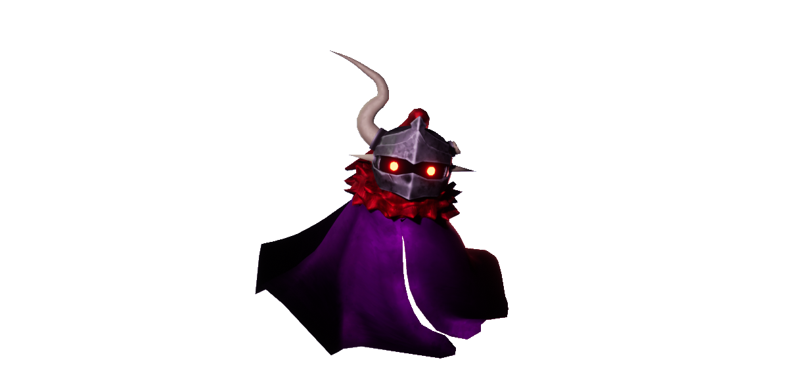
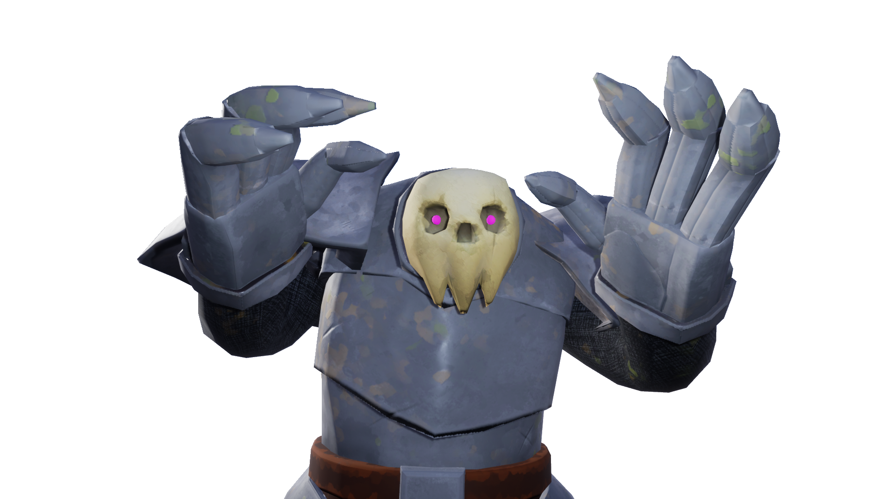

Collaborated Projects
Equinox
Dec 2022 -June 2023



Group project developed with three artiest and two programmers.
Game inspired by rouge-likes and Pac-Man. You as the wraith lost thier kingdom.
You're tasked to complete the puzzles to light the beacons and unlock the door
and claim back your kingdom
During the development I learned it's takes a lot to make a game,
but with a dedicated team it's possible.
Deadlines are important and sometimes things get cut out.
Developer Environment:
- Unreal Engine 4.27
- Visual Studios C++
- Version Control: Purforce
- Itch.com
Contribution:
- Enemy AI
- Game Save
- UI Programming
- Environment Design
Click the Link to itch.io Game Page
See more.png)